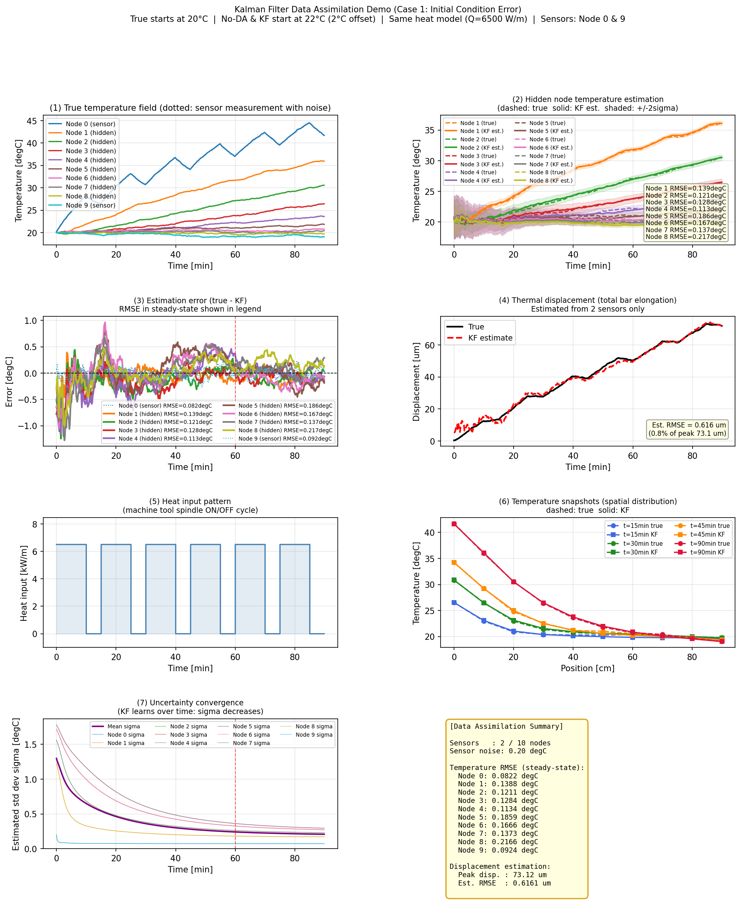
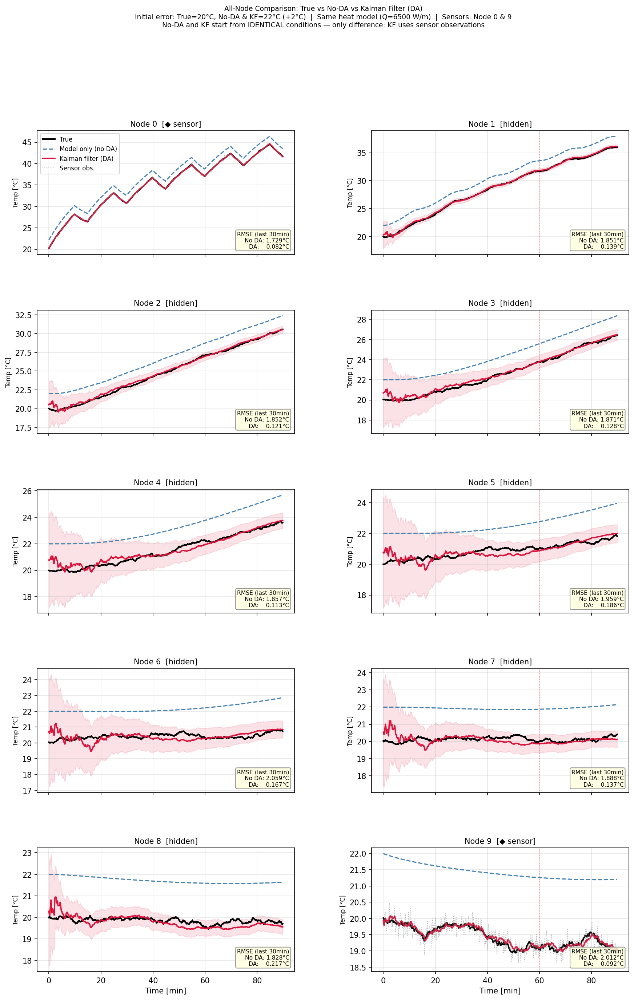
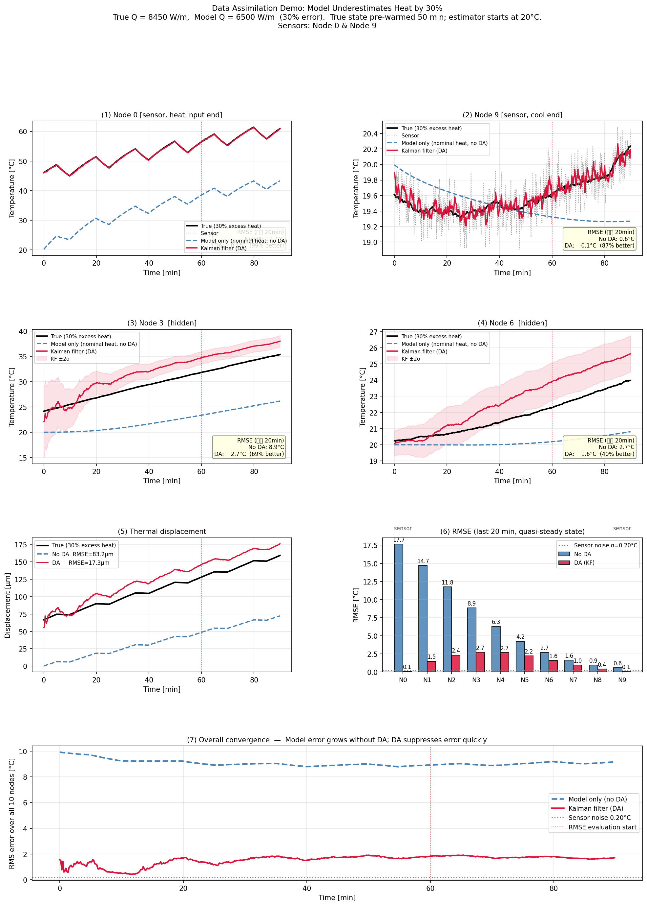
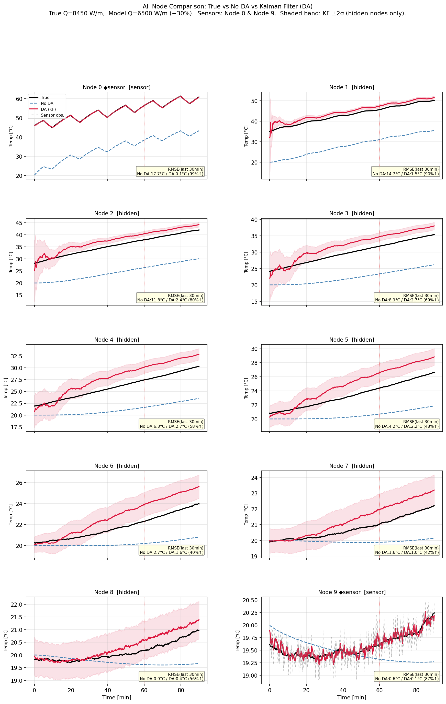
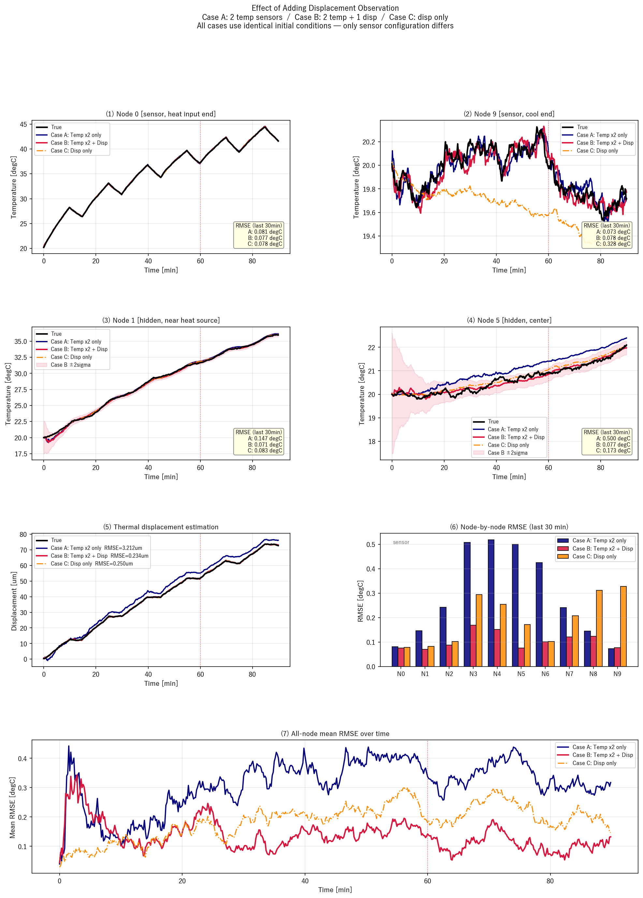
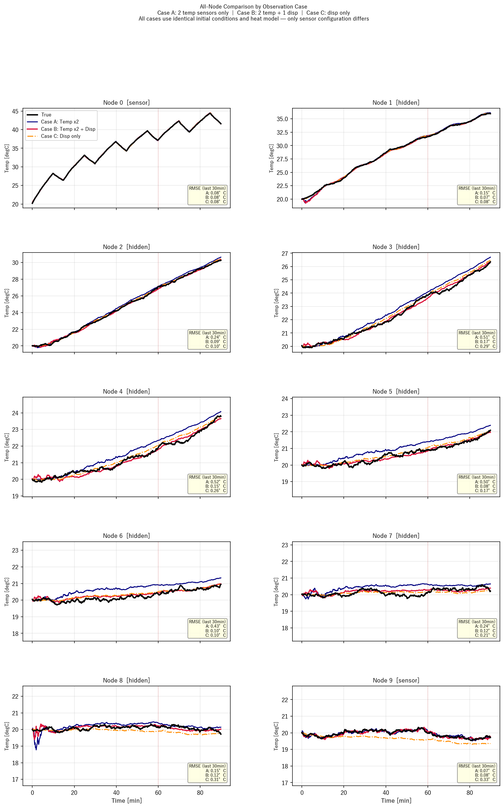

目次
入門〜応用まで 5 冊を難易度順に紹介
開発フロー / 主なやりとり / AI を使うコツ
DA手法の全体像 / 工作機械熱変位補償研究
問題設定 / ロードマップ
線形KFの選択理由 / 状態空間モデル / KFアルゴリズム / ゲイン導出
ファイル構成 / プログラム構成 / 主要コード
ケース1：基本デモ（初期誤差）
ケース2：DA効果デモ（コールドスタート＋モデル誤差）
ケース3：変位センサ追加（Case A / B / C）
達成したこと
短期・中期・長期ロードマップ
各論文から得られる研究方向
参考図書 — さらに学ぶために
データ同化を学ぶ参考図書
本プロジェクトの理論的背景となるデータ同化・カルマンフィルタを学ぶための参考図書を紹介します。
難易度順に並んでいます。まず 入門書 で概念を押さえ、
中級・応用書 で実践力を深めることを推奨します。

樋口 知之 著 ／ 朝倉書店（2011）
「観測データとモデルをどう組み合わせるか」という問いに対し、ベイズ推定の視点から丁寧に解説。 数学的な前提知識が少なくても読める入門の定番。DAとは何かを直感的に理解するのに最適。

中野 慎也 著 ／ 共立出版
統計学シリーズの一冊。カルマンフィルタ・アンサンブルカルマンフィルタ・粒子フィルタを数式ベースで整理。 本プロジェクトで使った線形KFのアルゴリズムを理論面から追う際に特に役立つ。コンパクトで読みやすい。

淡路 敏之 著 ／ 京都大学学術出版会（2014）
実験・観測データと数値モデルをどう組み合わせるかという実用視点から解説。 気象・海洋モデルを題材にしているが、「モデル誤差があってもDAがなぜ機能するか」を深く理解できる。 本プロジェクトのケース2（モデル誤差あり）の理論的背景として参考になる。

三好 建正 著 ／ 朝倉書店
気象予報を事例に、EnKF（アンサンブルカルマンフィルタ）・4D-Var など実践的な手法を解説。 気象専門書だが「大規模システムにDAをどう適用するか」という設計思想は他分野にも通じる。 本プロジェクトの次ステップ（観測点最適配置、EnKFへの拡張）を考える際の参考になる。

大林 茂 著 ／ 共立出版（クロスセクショナル統計シリーズ）
CFD（数値流体力学）シミュレーションへのDA適用を解説。流体計算とセンサデータを融合した デジタルツイン構築の最先端事例を紹介。本プロジェクトが目指す「CAEへのDA統合」の 発展形がここにある。OpenFOAM × KF への拡張を考える際の重要リファレンス。
00 — 開発の経緯
Claude との対話で進めた開発フロー
カルマンフィルタによる1D熱場推定の基本実装。ツイン実験の枠組みを構築。
→ 完全同一条件（同初期温度・同熱入力）からスタートするよう修正。「比較の大原則」を全スライドに明記。
原因分析：熱源局在→空間的に不均一な温度誤差→KFが中央節点を誤方向に過補正。
→ 「+2°C 一様初期誤差」シナリオに変更。Q_SCALE=1.0, P0=4.0°C², L_P0=4 に最適化。全10節点 88〜95% 改善達成。
tr(P⁺) を K で微分 → ゼロ置き → K = P⁻Hᵀ(HP⁻Hᵀ+R)⁻¹
・全グラフのラベルを英語化（文字化け解消）
・ケース3：全10節点グラフ追加、Node 0をメイングラフに追加、main_da_demo と同一レイアウトに統一
・Case A を薄青点線 → 濃紺実線に変更（No-DA との見た目の混同を防止）
各スライドに「実験条件」「このケースの意図」「次のケースで何を検証するか」を明記。
00 — 開発の経緯
Claude との主なやりとり（抜粋）
本当にDAありとDAなしで正しい比較はできていますか？No-DAはDAと同条件で、DAなしだとどれだけ正解からずれるのかを示してください。
コードを確認し No-DA と KF が完全同一条件からスタートするよう修正。RMSEテーブルを No-DA vs KF の比較表に更新。「比較の大原則」ボックスを全スライドに追加。
DAなしが少しだけ不利になるよう条件を変えてほしい。適切なパラメータがあれば最適化もして。
「10%モデル誤差」案で N5, N6 が逆に悪化（-287%）する問題が発生。原因分析：熱源局在→空間的に不均一な誤差→KFが過補正。
→ 「+2°C 一様初期誤差」に変更。Q_SCALE=1.0, P0=4.0°C², L_P0=4 を最適化。全10節点 88〜95% 改善。
基本デモと Case A/B/C の違いがわからない。p.22 と p.25 も違う結果に見えるが異なる条件ですか？
基本デモ＝「DA vs No-DA」の縦比較。Case A/B/C＝「センサ種類」の横比較（全てDA使用）。
p.22（ケース1: 初期誤差2°C）と p.25（ケース2: コールドスタート26°C＋モデル誤差30%）は意図的に異なる条件。各スライドに条件表と意図を追加。
ケース3のグラフに Node 0 の温度も追加して。main_da_demo のグラフ表示と合わせてほしい。
plot_comparison を 4行×2列に再設計。Row0：センサ節点（N0, N9）／ Row1：未観測節点（N1, N5）＋±2σ帯 ／ Row2：熱変位＋RMSEバーグラフ ／ Row3：全節点平均RMSE時系列。main_da_demo.py と統一レイアウト。
00 — 開発の経緯
AI でうまくプロジェクトを進めるコツ
✅ 効果的だったこと
「差が出るようにして」だけでなく「No-DAより少しだけ不利に」と具体的に伝えると精度が上がる
「うまくいかない」ではなく「N5の改善率が-287%になった」と数値で伝えると原因分析が速い
背景・文脈があると AI が状況を正しく判断できる。「スライドで説明したいから」などの目的を付けると的外れな回答が減る
一度に多くの依頼をまとめるより「Q1〜Q4」のように番号付きで整理すると抜け漏れが防げる
⚠️ 注意すべきこと
AI がコードを変更しても「動く」と「正しい」は別物。グラフを実際に見て期待通りか確認する
初稿は「たたき台」として対話しながら反復改善するほうが最終品質が高くなる。今回のスライドも 7ステップかけて改善した
長い会話では AI の記憶が薄れる。「前回と同じ条件で」と言うより、その都度パラメータや前提を再掲すると確実
変更点をその場で docs/ や slides に反映させておくと、後から「なぜこうなっているか」が追跡できる
01 — 先行研究 ／ 基礎概念
データ同化（DA）とは何か？
目標：観測できない量（未観測節点の温度）を、 物理モデルの予測とセンサ観測を組み合わせることで推定する。
熱伝導方程式を解いて全節点の温度を予測
Node 0 と Node 9 の温度を測定
モデルと観測の信頼度に応じて重みを決定
全10節点の温度（未観測含む）
01 — 先行研究 ／ 基礎概念
データ同化の数学的基礎：ベイズの定理
データ同化は ベイズ推定 の枠組みで統一的に理解できる。 「モデル予測（事前情報）」と「観測（尤度）」を組み合わせて 「更新後の推定（事後分布）」を求める操作がその本質。
モデルによる予測分布
平均 \(\hat{\mathbf{x}}^-\)、共分散 \(\mathbf{P}^-\)
→ 観測前の不確かさ（広い）
センサが状態 \(\mathbf{x}\) のとき
観測 \(\mathbf{y}\) が得られる確率
→ 観測ノイズ \(\mathbf{R}\) で決まる
観測を反映した更新分布
平均 \(\hat{\mathbf{x}}^+\)、共分散 \(\mathbf{P}^+\)
→ 不確かさが縮小（狭い）
事前分布 \(\mathcal{N}(\hat{\mathbf{x}}^-, \mathbf{P}^-)\) × 尤度 \(\mathcal{N}(\mathbf{H}\mathbf{x}, \mathbf{R})\) の積を解析的に計算すると、そのままカルマンゲイン式が導かれる： \[ \hat{\mathbf{x}}^+ = \hat{\mathbf{x}}^- + \underbrace{\mathbf{K}}_{\text{ゲイン}}(\mathbf{y} - \mathbf{H}\hat{\mathbf{x}}^-) \qquad \mathbf{P}^+ = (\mathbf{I} - \mathbf{K}\mathbf{H})\mathbf{P}^- \] 非線形・非ガウスの場合は EnKF・粒子フィルタ等の近似手法が必要
01 — 先行研究 ／ 基礎概念
データ同化の動作イメージ：逐次的な推定更新
観測が届くたびに「予測（P⁻ 大）」→「観測」→「更新（P⁺ 小）」を繰り返す。推定誤差が収縮していく。
01 — 先行研究 ／ 手法分類
DA手法の2大アプローチ：変分法 vs 逐次法
変分法（Variational）
「過去〜現在の全観測を一括して最適化」
コスト関数：$J = \frac{1}{2}(\mathbf{x}-\mathbf{x}^b)^T\mathbf{B}^{-1}(\mathbf{x}-\mathbf{x}^b) + \frac{1}{2}(\mathbf{y}-\mathbf{H}\mathbf{x})^T\mathbf{R}^{-1}(\mathbf{y}-\mathbf{H}\mathbf{x})$
固定の背景誤差共分散 B。気象予報で広く利用
時間方向にも積分してコスト最小化
随伴モデルが必要。実装が難しいが最高精度
時間逆積分が困難なモデルには不向き
逐次法（Sequential）
「予測 → 観測が来たら更新 → また予測 → …」
sample/002-0_laplacian_da_1d/oi/
固定 B、A_d 不要。CFD をブラックボックスとして使える
sample/001_kalman_thermal_1d/
P を逐次更新。線形系で厳密最適
sample/003_enkf_... （未実装）
A_d 不要。大規模 CFD に対応可能
モンテカルロで任意の非線形・非ガウス系を扱える
計算コストが高いため大規模系には困難
01 — 先行研究
データ同化手法の全体マップ
変分法（Variational DA）
全観測を一度にコスト関数最小化
気象予報で実用（静的）
時間方向にも最適化
随伴モデルが必要・最高精度
逐次法（Sequential DA）
固定の背景誤差共分散 B を使用。A_d 不要
誤差共分散 P を時間発展。線形系で厳密最適
非線形系への拡張（ヤコビアン / シグマ点）
A_d 不要・大規模 CFD に強い（OpenFOAM 連成の標準手法）
任意の非線形・非ガウス系（計算コスト大）
01 — 先行研究
工作機械熱変位補償 + データ同化
| # | 著者・年 | 手法 | 内容 |
|---|---|---|---|
| M1 | Lang et al. 2024, Manuf. Lett. |
KF | 工作機械デジタルツインへのKF適用。 KF駆動の熱誤差オブザーバ設計 |
| M2 | Lang et al. 2025, J. Manuf. Syst. |
Digital Twin | デジタルツインを使った温度センサ配置最適化。 少数センサで熱誤差低減 |
| M3 | Mayr et al. 2012, CIRP Ann. |
Survey | 工作機械の熱変位問題の包括的サーベイ。 補償手法の分類と課題整理 |
| M4 | Gomez-Acedo et al. 2013, Int. J. Mach. Tools |
KF + SS | 状態空間モデル + KFによる大型工作機械の熱変位補償 |
| M5 | Brecher et al. 2017, Procedia CIRP |
UKF | UKFを用いた工作機械の幾何誤差・熱誤差モデリング |
| P1 | Kalman, R.E. 1960, J. Basic Eng. |
KF 原著 | 線形フィルタリングと予測問題の新しいアプローチ |
02 — 研究の動機
工作機械の熱変位問題
問題の構造
現実の制約
機械全体に多数の温度センサを取り付けることは コスト・スペースの制約から困難
発熱量・切削液・環境温度などの 境界条件は完全には分からない
補償制御のためには加工中に リアルタイムで変位を推定する必要がある
少数の温度センサ（2点）と物理モデルを組み合わせて、 未観測節点の温度場と熱変位を高精度に推定できるか？
02 — 研究の動機
概念実証モデルの設定
1次元熱棒モデル（10節点）
物理パラメータ
| 棒の長さ | 0.9 m |
| 節点間距離 Δx | 0.1 m |
| 熱拡散率 α | 1.2×10⁻⁵ m²/s |
| 時間刻み Δt | 10 s |
| 総シミュレーション | 90 min |
センサ・観測設定
| センサ位置 | Node 0, Node 9 |
| 観測ノイズ σ_obs | 0.20 °C |
| 推定対象 | Node 1〜8（8点） |
| 変位推定 | 全節点温度の積算 |
熱入力パターン
| スピンドル熱入力 | 6500 W/m |
| ONサイクル | 10 min ON |
| OFFサイクル | 5 min OFF |
| プロセスノイズ | 0.03 °C |
02 — 本プロジェクトの位置づけ
研究ロードマップ
Python製1次元熱伝導モデル + 線形カルマンフィルタ
→ KF の原理確認・少数センサからの温度場推定・変位推定
OpenFOAM laplacianFoam + Optimal Interpolation (OI)
→ CFDソルバをブラックボックスとして扱うDAの原理実証
OpenFOAM + EnKF / パラメータ同化
→ 境界条件（熱入力量）自体の推定・大規模化
実測温度データ + OpenFOAM + DA
→ 丸棒実験での実証・工作機械構造部品への適用
工作機械スピンドルへの熱変位リアルタイム補償
→ IoT センサ + デジタルツイン + EnKF によるオンライン推定
03 — 手法の位置づけ
線形カルマンフィルタを選んだ理由
001の条件
- Python で自作した1次元熱伝導モデル
- 状態方程式 $\boldsymbol{\theta}_{k+1} = \mathbf{A}_d \boldsymbol{\theta}_k + \mathbf{B}_d u_k$ が明示的に分かる
- 線形系（熱拡散 PDE の有限差分モデル）
- 状態数が小さい（10次元）
手法ごとの要件比較
| 手法 | A_d | 規模 | 非線形 |
|---|---|---|---|
| KF ← 001 | ✅ 必要 | 小〜中 | ✖ |
| OI ← 002 | ✖ 不要 | 中〜大 | ✖ |
| EKF | ヤコビアン | 小〜中 | △ |
| UKF | ✖ 不要 | 中 | ◎ |
| EnKF | ✖ 不要 | 大 | ◎ |
03 — 理論：物理モデルの導出
出発点：1次元熱伝導方程式
物理問題の設定
長さ $L = 1$ m の熱棒。左端から熱入力、両端から対流冷却：
支配方程式（熱伝導 PDE）
$\rho c_p$：体積熱容量 [J/(m³·K)]、$k$：熱伝導率 [W/(m·K)]
$\alpha = k/(\rho c_p)$：熱拡散率 [m²/s]
有限差分法（FDM）による空間離散化
棒を $n=10$ 節点に分割（$\Delta x = L/(n-1) = 0.1$ m）。2階微分を中心差分で近似：
各節点 $i$ の時間微分：
境界節点（Node 0）では対流冷却の境界条件を加算：
03 — 理論：状態空間モデル
連続時間 ODE から離散時間状態方程式へ
前進オイラー法で時間離散化
連続時間 ODE $\dot{\boldsymbol{\theta}} = \mathbf{A}_c\boldsymbol{\theta} + \mathbf{B}_c u$ を $\Delta t = 10$ s で差分化：
整理すると：
$\mathbf{A}_c$ の実装（thermal_model.py）：
r = alpha / dx**2 # r = 1.2e-5 / 0.01 = 0.0012
h = h_conv / (rho_cp * dx)
# 内部節点 i
A_c[i, i-1] = +r
A_c[i, i ] = -2*r
A_c[i, i+1] = +r
# 端部節点（対流冷却あり）
A_c[0, 0] = -r - h
A_c[0, 1] = +r
離散時間状態方程式
$r\,\Delta t = 0.0012 \times 10 = 0.012 \ll 0.5$ ✅
Step 3：観測式
$\mathbf{v}_k \sim \mathcal{N}(0, \mathbf{R})$：観測ノイズ
03 — 理論：カルマンフィルタ
線形カルマンフィルタのアルゴリズム
| $\hat{\boldsymbol{\theta}}_k^- \in \mathbb{R}^{10}$ | 予測ステップ後の推定温度ベクトル（観測反映前） |
| $\hat{\boldsymbol{\theta}}_k^+ \in \mathbb{R}^{10}$ | 更新ステップ後の推定温度ベクトル（観測反映済み） |
| $\mathbf{P}_k^- \in \mathbb{R}^{10\times10}$ | 予測誤差共分散行列：推定誤差の大きさと相関を表す |
| $\mathbf{P}_k^+ \in \mathbb{R}^{10\times10}$ | 更新後誤差共分散行列：観測後に不確かさが減少 |
| $\mathbf{Q} \in \mathbb{R}^{10\times10}$ | プロセスノイズ共分散：モデル誤差の大きさ |
| $\mathbf{R} \in \mathbb{R}^{2\times2}$ | 観測ノイズ共分散：センサ精度の逆数に相当 |
| $\mathbf{K}_k \in \mathbb{R}^{10\times2}$ | カルマンゲイン：2点センサ → 10節点全体への「重み行列」 |
予測ステップ（Predict）
def predict(self, u):
self.x = self.A @ self.x + self.B @ u
self.P = self.A @ self.P @ self.A.T + self.Q
更新ステップ（Update）
03 — 理論
カルマンゲインの導出（最小分散推定）
カルマンゲイン $\mathbf{K}$ は「推定誤差の分散を最小にする最適な重み行列」として導出される。 「センサ観測をどれだけ信じるか」という重みを、モデル誤差とセンサ誤差の比から自動計算する。
更新式を線形に仮定する：
$$\hat{\mathbf{x}}^+ = \hat{\mathbf{x}}^- + \mathbf{K}(\mathbf{y} - \mathbf{H}\hat{\mathbf{x}}^-)$$
$\mathbf{K}$ をどう選べば推定誤差が最小になるか？
目標：事後誤差共分散 $\text{tr}(\mathbf{P}^+)$ を最小化。
事後誤差 $\mathbf{e}^+ = \mathbf{x} - \hat{\mathbf{x}}^+$ を計算すると：
$$\mathbf{e}^+ = (\mathbf{I} - \mathbf{K}\mathbf{H})\mathbf{e}^- - \mathbf{K}\mathbf{v}$$
（$\mathbf{e}^-$：事前誤差、$\mathbf{v}$：観測ノイズ）
事後共分散：
$$\mathbf{P}^+ = (\mathbf{I}-\mathbf{K}\mathbf{H})\mathbf{P}^-(\mathbf{I}-\mathbf{K}\mathbf{H})^\top + \mathbf{K}\mathbf{R}\mathbf{K}^\top$$
$\text{tr}(\mathbf{P}^+)$ を $\mathbf{K}$ で微分してゼロと置く： $$\frac{\partial\,\text{tr}(\mathbf{P}^+)}{\partial \mathbf{K}} = -2\mathbf{P}^-\mathbf{H}^\top + 2\mathbf{K}(\mathbf{H}\mathbf{P}^-\mathbf{H}^\top + \mathbf{R}) = \mathbf{0}$$
分子 $\mathbf{P}^-\mathbf{H}^\top$：モデルの不確かさをセンサ空間に射影した量
分母 $\mathbf{H}\mathbf{P}^-\mathbf{H}^\top + \mathbf{R}$：センサ空間での合計不確かさ
→ $\mathbf{K}$ = モデル不確かさ ÷ 合計不確かさ = センサへの信頼度割合
04 — 実装
プログラム構成
ファイル構成と役割
物理モデル：PDE → A_c → A_d, B_d
連続系構築 + 前進オイラー離散化
推定アルゴリズム：predict / update
誤差共分散 P の管理・カルマンゲイン計算
メインシナリオ：温度センサ2点
8パネルグラフ生成（results.png）
DA効果デモ：コールドスタート + 30%モデル誤差
過酷条件下でのKF vs No-DA比較
変位センサ追加実験
3ケース比較（温度のみ / 温度+変位 / 変位のみ）
データフロー
$\delta\,[\mu\text{m}] = C_\text{disp}\sum_{i}\theta_i$ → $\mathbf{H}_\text{disp} = C_\text{disp}\cdot[1,1,\ldots,1]$
04 — 実装：ファイル構成
プロジェクトのファイル構成
ディレクトリ構成
各ファイルの入出力
入力：物理パラメータ（α, dx, h_conv, ρcₚ, dt）
出力：A_d, B_d（離散時間状態行列）、step() で次ステップ温度
入力：A_d, B_d, H, Q, R, x0, P0
出力：step(u, y) → 推定値 x̂, 誤差共分散 P
入力：なし（内部パラメータで動作）
出力：results*.png（グラフ画像）、コンソールに RMSE 表
入力：なし
出力：results_disp_obs.png（6パネル比較）
results_disp_obs_all_nodes.png（全10節点 5×2グリッド）
04 — 実装：メインループ
シミュレーションループ（main.py 核心部）
# ── 初期化 ───────────────────────────────────────────────────────────────────
model = ThermalBarModel(n_nodes=N_NODES, dx=DX, dt=DT, ...)
kf = KalmanFilter(A=model.A_d, B=model.B_d,
H=H, Q=Q_mat, R=R_mat, x0=x0, P0=P0)
# ── メインループ (540 ステップ = 90 min) ──────────────────────────────────────
for k in range(N_STEPS):
u = np.array([u_series[k]]) # 現在の熱入力 [W/m]
# ① 真値の時間発展（シミュレーション上の「正解」）
x_true = model.step(x_true, u, noise_std=PROC_NOISE_STD)
# ② センサ計測（真値 + ガウスノイズ）
y = H @ x_true + np.random.randn(n_obs) * OBS_NOISE_STD
# ③ カルマンフィルタ: 予測 → 更新
x_est, P_est = kf.step(u, y)
# 内部: predict() → x̂⁻, P⁻
# update(y) → K, x̂⁺, P⁺
# ④ 記録
true_T[k] = x_true # 全10節点の真値
kf_T[k] = x_est # KF推定値
kf_sigma[k] = np.sqrt(np.diag(P_est)) # 推定標準偏差 σ
# ── 熱変位の計算 ──────────────────────────────────────────────────────────────
def compute_displacement(temps, t_ref=T_INIT):
delta_T = temps - t_ref # 各節点の温度上昇
return ALPHA_EXP * np.sum(delta_T) * DX * 1e6 # [µm]
disp_true = compute_displacement(true_T[-1])
disp_est = compute_displacement(kf_T[-1])
05 — 結果：条件一覧
3つのケース — 条件と目的の一覧
| 項目 |
ケース 1 — 基本デモ main.py |
ケース 2 — DA 効果デモ main_da_demo.py |
ケース 3 — センサ比較 main_disp_obs.py |
|---|---|---|---|
| 目的 |
「センサを使うと初期誤差を 速やかに修正できる」 を示す |
「初期誤差もモデル誤差も 大きい過酷条件でも DA は有効か」を検証 |
「温度センサ・変位センサの どの組み合わせが 最も精度が良いか」を比較 |
| 真値の 初期温度 |
全節点 20°C |
暖機後の状態 Node 0 ≈ 46°C （50 分先行して真値のみ計算） |
全節点 20°C |
| 推定側の 初期温度 |
全節点 22°C 初期誤差 +2°C（小） |
全節点 20°C（コールドスタート） 初期誤差 最大 26°C（大） |
全節点 20°C（真値と同じ） 初期誤差なし |
| 熱入力 （Node 0 のみ） |
真値・推定側とも 6,500 W/m モデル誤差なし |
真値：8,450 W/m 推定側：6,500 W/m 30% 過小評価（モデル誤差あり） |
真値・推定側とも 6,500 W/m モデル誤差なし |
| 熱入力 パターン |
3 ケース共通：10 分 ON → 5 分 OFF のサイクル繰り返し（90 分間） | ||
| センサ構成 |
Node 0・Node 9 温度センサ No-DA と KF で比較 |
Node 0・Node 9 温度センサ No-DA と KF で比較 |
Case A：温度 2 点のみ Case B：温度 2 点 ＋ 変位 Case C：変位のみ 3 ケースすべて KF 使用 |
| 比較軸 |
縦比較 DA あり vs DA なし |
縦比較 DA あり vs DA なし （過酷条件版） |
横比較 センサ種類 A vs B vs C （全て DA 使用） |
ケース 1 → 2 と条件を段階的に厳しくし、ケース 3 でセンサ構成の最適化を探る。
05 — 結果
結果を読む前に：ツイン実験の設定
現実では「真の温度場」は測れない。そこで ツイン実験（双子実験）を使う。
仮想上の「正解シミュレーション（真値）」を先に走らせ、そこから作ったセンサ観測を KF に与えて推定させる。
真値が既知なので、KF がどれだけ真値に近いかを直接 RMSE で評価できる。
各ケースは比較する 3 本の線（真値 / No-DA / KF）を同時にシミュレーションする。 以下の 3 ケースで誤差の種類と難しさを変えて KF の効果を検証する。
ケース 1：基本デモ
main.pyモデル誤差なし・正しいパラメータ
→ KF が初期値ズレを補正
ケース 2：DA 効果デモ
main_da_demo.py推定側は室温 20°C でコールドスタート
＋ モデルが発熱量を 30% 過小評価
モデル: Q×1.0（公称値のみ）
→ 全節点で DA 効果を確認
ケース 3：変位センサ追加
main_disp_obs.py温度センサに追加した場合の効果
→ 中央節点への間接的な情報
05 — 結果
ケース 1 の実験条件（main.py）
同じ初期温度・同じ熱入力モデルを使う。唯一の違いはセンサ観測を使うかどうかだけ。
| 条件 | ① 真値 (Truth) | ② No-DA（センサなし） | ③ KF（DA あり） |
|---|---|---|---|
| 初期温度 | 全節点 20°C（正解） | 全節点 22°C（2°C 高め） | 全節点 22°C ← No-DA と同じ |
| 熱入力モデル 投入節点・パターン |
Node 0 のみ（左端） 6,500 W/m 10 min ON → 5 min OFF サイクル |
Node 0 のみ 6,500 W/m ← 同じ モデル誤差なし |
Node 0 のみ 6,500 W/m ← 同じ モデル誤差なし |
| プロセスノイズ | σ = 0.03°C/step あり | なし | なし |
| センサ観測 | （比較の基準） | ✗ 使わない | ✓ Node 0, Node 9（σ=0.20°C） |
初期温度を 2°C 過大評価した状態からスタートする。 熱的な時定数が長い（対流時定数 ≈ 73 分）ため、 誤差は 90 分間ほとんど自然には消えない。 センサで補正しないので 2°C 近い誤差が残り続ける。
No-DA と全く同じ誤った初期状態からスタートする。 Node 0, Node 9 のセンサが「真値は 2°C 低い」ことをすぐに検知し、 カルマンフィルタが全節点を数ステップで正しい値に引き戻す。 → センサ 2 点で全 10 節点が急速に収束
05 — 結果
基本デモ：2点センサによる温度場推定

定常域 RMSE 比較（t = 60〜90 min）
| 節点 | 種別 | No-DA [°C] | KF [°C] | 改善率 |
|---|---|---|---|---|
| Node 0 | センサ | 1.729 | 0.082 | 95% |
| Node 1 | 未観測 | 1.851 | 0.139 | 93% |
| Node 2 | 未観測 | 1.852 | 0.121 | 93% |
| Node 3 | 未観測 | 1.871 | 0.128 | 93% |
| Node 4 | 未観測 | 1.857 | 0.113 | 94% |
| Node 5 | 未観測 | 1.959 | 0.186 | 91% |
| Node 6 | 未観測 | 2.059 | 0.167 | 92% |
| Node 7 | 未観測 | 1.888 | 0.137 | 93% |
| Node 8 | 未観測 | 1.828 | 0.217 | 88% |
| Node 9 | センサ | 2.012 | 0.092 | 95% |
05 — 結果
ケース 1：全 10 節点 — 真値 vs No-DA vs KF（main.py）
| 初期温度 | 真値 20°C、No-DA・KF 22°C（+2°C 過大） |
| 熱入力 | 全シミュレーション共通 6,500 W/m（モデル誤差なし） |
| センサ | No-DA：使わない ／ KF：Node 0・Node 9 温度 |
「起動時に内部温度を正確に知れない」という
現実的でよくある状況 を再現。
初期誤差が小さくても、熱的時定数（≈73 min）の
ために No-DA では誤差が最後まで残り続ける。
KF がどれだけ速く引き戻せるかを確認する。

結果：No-DA は +2°C の初期誤差が 90 分後も解消されない。KF は数ステップで真値に収束。 全 10 節点で RMSE 88〜95% 改善（センサ節点 ≈ 0.08°C、未観測 ≈ 0.11〜0.22°C）。
05 — 結果
ケース 2 の実験条件（main_da_demo.py）
同じ初期温度・同じ（誤った）熱入力モデルを使う。唯一の違いはセンサ観測を使うかどうかだけ。
真値シミュレーションを 50 分間先行して走らせ、Node 0 ≈ 46°C の「暖機済み状態」を作る。 No-DA・KF にはこの暖機履歴を渡さない。「電源を入れたら機械はすでに温かかった」状況。
| 条件 | ① 真値 (Truth) | ② No-DA（センサなし） | ③ KF（DA あり） |
|---|---|---|---|
| 初期温度 | 暖機後の状態 Node 0 ≈ 46°C |
全節点 20°C（コールドスタート） 初期誤差 Node 0 で 26°C |
全節点 20°C ← No-DA と同じ 同じく初期誤差 26°C |
| 熱入力モデル 投入節点・パターン |
Node 0 のみ（左端） 8,450 W/m（Q×1.3） 10 min ON → 5 min OFF サイクル |
Node 0 のみ（同じ節点） 6,500 W/m（30% 過小評価） 同じ ON/OFF サイクルを仮定 |
Node 0 のみ ← No-DA と同じ 6,500 W/m（同じく 30% 過小評価） 同じ ON/OFF サイクルを仮定 |
| センサ観測 | （比較の基準） | ✗ 使わない | ✓ Node 0, Node 9（σ=0.20°C） |
████████████████████──────────████████████████████──────────
節点1〜9 への直接投入はなし。Node 0 の熱が熱伝導で隣接節点へ伝わる。
初期値が 26°C ズレている上に、発熱量を 30% 過小評価している。 センサがないため誤差を補正する手段がまったくない。 両方の誤差が積み重なって時間とともに悪化する。
No-DA と全く同じ「誤った初期値 + 誤ったモデル」からスタートする。 センサ 2 点が「真値はモデルよりずっと熱い」ことを継続的に検知し、 カルマンフィルタが全 10 節点の推定を逐次引き上げて補正する。
05 — 結果
DA 効果デモ：暖機済み機械 × モデル誤差 30% · 90 分（main_da_demo.py）

後半 30 分 RMSE 比較（定常状態、t = 60〜90 min）
| 節点 | 種別 | No DA [°C] | DA [°C] | 改善率 |
|---|---|---|---|---|
| Node 0 | センサ | 17.7 | 0.1 | 99% |
| Node 1 | 未観測 | 14.7 | 1.5 | 90% |
| Node 2 | 未観測 | 11.8 | 2.4 | 80% |
| Node 3 | 未観測 | 8.9 | 2.7 | 69% |
| Node 4 | 未観測 | 6.3 | 2.7 | 58% |
| Node 5 | 未観測 | 4.2 | 2.2 | 48% |
| Node 6 | 未観測 | 2.7 | 1.6 | 40% |
| Node 7 | 未観測 | 1.6 | 1.0 | 42% |
| Node 8 | 未観測 | 0.9 | 0.4 | 56% |
| Node 9 | センサ | 0.6 | 0.1 | 87% |
| ケース | 変位 RMSE [µm] | 改善率 |
|---|---|---|
| No DA | 83.2 | — |
| KF (DA) | 17.3 | 79% |
→ 変位 RMSE 83.2 → 17.3 µm（79% 改善）
センサ補正が熱伝導モデルを通じて波及するため効果あり。
ノイズパラメータは main.py / main_compare_da.py と同一（公平比較）
05 — 結果
ケース 2：全 10 節点 — 真値 vs No-DA vs KF（main_da_demo.py）
| 真値の初期温度 | 暖機後の状態（Node 0 ≈ 46°C） |
| No-DA・KF の初期温度 | 20°C（コールドスタート、誤差最大 26°C） |
| 真値の熱入力 | 8,450 W/m |
| No-DA・KF の熱入力 | 6,500 W/m（30% 過小評価） |
| センサ | No-DA：使わない ／ KF：Node 0・Node 9 温度 |
ケース 1（初期誤差 2°C のみ）より大幅に過酷な条件。
① コールドスタート：機械がすでに暖まっていることを
知らずに 20°C から計算開始（誤差 26°C）
② モデル誤差 30%：発熱量の見積もりが誤っており
誤差が時間とともに累積し続ける
この「2 重の誤差」条件でも KF が有効かを確認する。

薄赤帯 = KF ±2σ ／ 右下ボックス = 後半 30 分 RMSE
青線と黒線の乖離 = センサなしでの累積誤差
赤線と黒線の近さ = センサで補正できた量
N0（センサ）: 99% 改善（17.7 → 0.1°C）
N1〜N2: 90%, 80% 改善
中央 N4, N5: 58%, 48% 改善（モデル誤差の影響残存）
N9（センサ）: 87% 改善
熱変位: 79% 改善（83.2 → 17.3 µm）
N4・N5 は 48〜58% 改善にとどまる。両端センサから遠く、モデル誤差の影響が直接残るため。
→ 次のケース 3 で検証すること：データ同化に使うセンサの種類を変えたらどうなるか？
工作機械には 工具長計（リニアエンコーダ） が既設されていることが多い。 これは棒全体の熱変位（全節点温度の積算）を測る。
この 変位センサを KF の観測量に追加 / 置換 すると、 温度センサだけでは補正できなかった中央節点の精度が改善できるか？
05 — 結果
ケース 3：変位センサ追加による推定精度の向上（main_disp_obs.py）
3通りとも同じ熱モデル・同じ初期条件からスタートし、観測の種類だけが違う。
📋 初期条件（ケース 2 とは異なる）：真値・Case A/B/C とも全節点 20°C からスタート。 ケース 2 の暖機済み 46°C 状態とは別設定。 ここではセンサ構成の差だけを純粋に比較するため、初期誤差・モデル誤差のないシンプルな条件を使用している。
Node 0, Node 9 の温度を観測
Node 0, Node 9 の温度 ＋ 棒全体の熱変位を観測
温度センサなし、熱変位だけを観測

3ケース比較（定常域 RMSE）
| ケース | 平均 RMSE [°C] |
最大 RMSE [°C] |
変位 RMSE [µm] |
|---|---|---|---|
| 温度 2点のみ | 0.341 | 0.519 | 3.212 |
| 温度 2点 + 変位 | 0.113 | 0.169 | 0.234 |
| 変位のみ | 0.191 | 0.312 | 0.250 |
変位観測追加で温度 RMSE が 0.341 → 0.113 °C（67% 改善）
変位 RMSE は 3.21 → 0.23 µm（93% 改善）
変位 $\delta = \alpha_\text{exp}\sum_i(\theta_i - T_\text{ref})\Delta x$ は全節点の 積算値。
→ 2点温度センサが届かない中央節点の情報を「全体の合計」という形で間接提供。
→ KF は変位観測から逆算して中央節点の温度を推定できる。
実機では変位計（工具長計測）だけでも熱補償できる可能性を示唆。
05 — 結果
ケース 3：全 10 節点 — Case A / B / C vs 真値（main_disp_obs.py）

Case B（温度 + 変位）は中央節点（N4〜N6）での RMSE が最も小さい。 変位観測が「全節点の積算値」として中央節点の情報を間接提供するため。
06 — まとめ
まとめ
✅ 達成したこと
熱拡散 PDE → 有限差分 → A_d, B_d の明示的導出
予測・更新ステップ、誤差共分散 P の管理
センサ 2点から未観測 8節点を推定（RMSE ≈ 0.1〜0.2 °C）
温度場から変位を計算（RMSE ≈ 0.64 µm）
変位観測追加で精度が大幅向上（93% 改善）
📋 確認できた知見
両端センサは端部では効果大・中央付近は補正弱め。 中央追加センサで改善が見込める。
変位は全節点積算 → 全体情報として内部節点の制約を補完。
P が大 → K が大 → センサを重視。 時間とともに P が収束 → 推定が安定。
Python 製モデルで KF の原理を確認。
この基盤の上に 002（OpenFOAM + OI）、003（EnKF）と発展させる。
07 — 今後の展望
今後の展望
短期（次のステップ）
実装済み
OpenFOAM laplacianFoam + OI。 A_d を使わず CFD をブラックボックスとして扱う DA の実証。
センサ位置を変えて RMSE がどう変わるか系統的に調査。 中央センサ追加の効果確認。
温度場ではなく熱入力 Q 自体を状態に含めて推定。
中期目標
アンサンブルカルマンフィルタによる大規模 CFD 連成。 A_d 不要・非線形対応・スケーラブル。
丸棒実験での実測温度を使い、 ツイン実験から実データへ橋渡し。
機械構造部品（軸・コラム）への適用。 節点数増加時の P 行列スケーラビリティ。
長期目標
IoT センサ + OpenFOAM + EnKF によるリアルタイム熱変位推定システム。
推定した変位を CNC コントローラへフィードバック。 加工精度の向上を実証。
OpenFOAM の随伴コードを用いた時間窓全体の最適化。 最高精度だが実装難度が高い。
08 — 先行研究から今後の取り組み
先行研究から得た知見と今後の取り組み
| 先行研究 | 主な知見 | 今後の取り組み |
|---|---|---|
|
Lang et al. 2024 Machine Tool KF Observer |
KF ベースのオブザーバが工作機械デジタルツインに有効。 状態空間モデルと KF の組み合わせが実用的 | 001 延長 001 の KF フレームワークを実機モデルへ適用。 A_d を OpenFOAM 近似から実測ベースに改良 |
|
Lang et al. 2025 Sensor Placement DT |
センサ配置がデジタルツインの精度を大きく左右。 観測可能性（Observability）の視点が重要 | 003 001 の結果（中央センサ不足）を踏まえ、 Observability 行列を使った最適センサ位置の探索 |
|
Mayr et al. 2012 Thermal Issues Survey |
熱変位の主な発生源・補償手法の分類。 環境温度・切削液などの外乱が補償を困難にする | 将来 切削液・環境温度外乱の状態拡張による同時推定。 パラメータ同化として境界条件を推定 |
|
Gomez-Acedo et al. 2013 State-Space + KF |
大型工作機械に状態空間 + KF を適用可能。 低次元化モデルが実用的な計算コストの鍵 | 003 OpenFOAM の高次元計算結果を低次元化（POD等） し、KF/EnKF の対象として扱う手法の調査 |
|
Brecher et al. 2017 UKF Machine Tool |
UKF で幾何誤差・熱誤差を同時に扱える。 ヤコビアン不要で非線形モデルに対応 | 将来 機械の幾何誤差 + 熱誤差を状態ベクトルに統合した UKF / EnKF による複合誤差補償 |
付録 — ドキュメント
PDF ドキュメント ビューア
スクロールで縦移動 · 前次ボタンでページ切替 · タブでドキュメント選択
参考文献